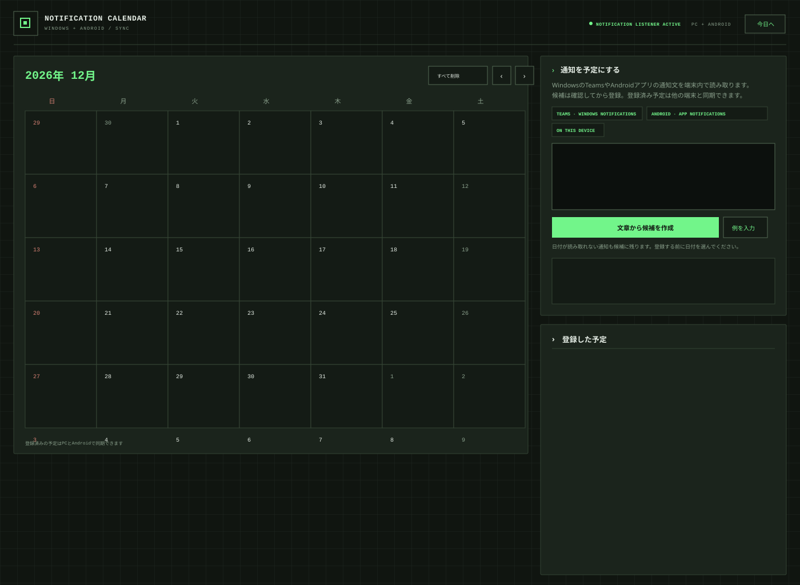

PROJECT / 003 — WINDOWS DESKTOP APP
通知カレンダー
Windowsデスクトップアプリ.
TeamsやChromeの通知をこのPC上で読み取り、課題や予定の候補として整理するWindows向け個人制作アプリです。
JavaScript / Node.jsWindows App SDKDesktop

01 / OVERVIEW
通知を予定候補に変える
Windowsに届いたTeamsやChromeの通知を読み取り、本文から予定の候補を作ります。候補を確認し、必要に応じて日付を選んでからカレンダーへ登録できます。Gmailの通知もChrome経由で受け取れます。
02 / WORKFLOW
受信からカレンダー登録まで
- Windowsの通知からTeamsやChromeの通知文を取得
- 通知文から予定名や日付を読み取り、候補を作成
- 登録前に内容と日付を確認・編集
- 予定を月間カレンダーと一覧で管理
03 / LOCAL FIRST
通知データはこのPC内に
通知文をGoogle Cloudなどの外部サービスへ送らず、アプリはPC内で動作します。カレンダーの予定はブラウザーのローカルストレージとPC内のファイルに保存されます。
04 / ENVIRONMENT
動作環境と制限
Windows 10 version 2004以降とNode.js 20以降が必要です。Windowsが通知として受け取り、リスナーが取得できる内容が対象です。通知をオフにしたチャットや、過去のTeamsチャンネル履歴を検索する機能はありません。